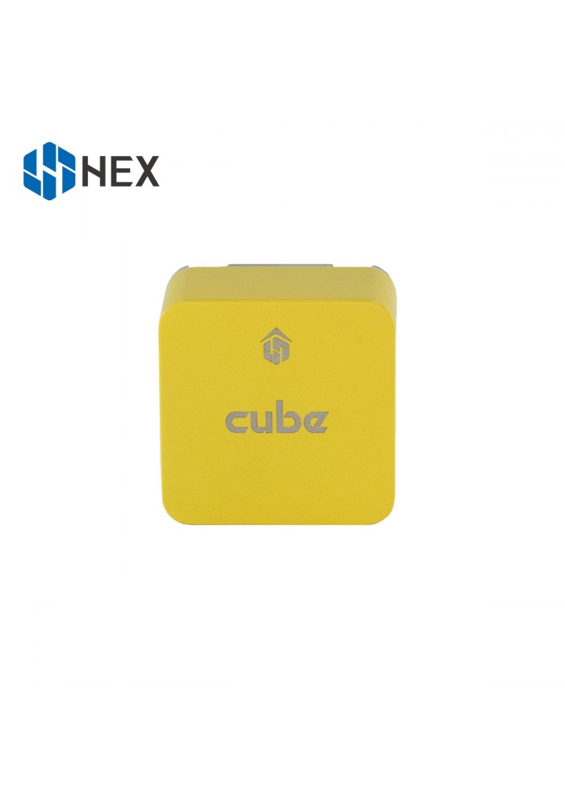

The Cube Yellow Overview¶
{kind=link}
System Features¶
The Cube Yellow autopilot is a new model in the Cubepilot ecosystem, designed for hobby users, commercial system integrators and UAS manufacturers the Cube Yellow is based on the Arm STM32F7 series SOC. Sitting directly between the Cube Black and Orange this model offers better performance and newer sensors over the Cube Black while retaining F series SOC compatibility.
Just like the other models the Yellow is part of a wide ecosystem of autopilot modules and carrier boards. All the Cube models are compatible with all of the carriers which allows users to choose an off the shelf carrier board design that best suits their needs. System designers are able to integrate the Cube directly into their designs via published carrier board specifications.
Cube Yellow Features¶
Faster F7 SOC with 512KB ram
Upgraded triple redundant IMU sensors for extra redundancy
2 sets of IMU are vibration-isolated mechanically, reducing the effect of frame vibration to state estimation
IMUs are temperature-controlled by onboard heating resistors, allowing optimum working temperature of IMUs
The entire flight management unit(FMU) and inertial management unit(IMU) are housed in a reatively small form factor (a cube).
Fully Cubepilot carrierboard compatible, all inputs and outputs go through a 80-pin DF17 connector, allowing a plug-in solution for manufacturers of commercial systems. Manufacturers can design their own carrier boards to suit their specific needs now and in the future.
Specifications¶
Processor
STM32F777VIT6 Cortex®-M7 Core (with DPFPU)
216 Mhz/512KB RAM/2 MB Flash
32 bit STM32F103 failsafe co-processor
Sensors
Three redundant IMUs (accels, gyros and compass)
ICM 20649 integrated accelerometer / gyro, MS5611 barometer on base board
InvenSense ICM20602 IMU,ICM20948 IMU/MAG, MS5611 barometer on temperature controlled, vibration isolated board
All sensors connected via SPI.
Power
Redundant power supply with automatic failover
Servo rail high-power (7 V) and high-current ready
All peripheral outputs over-current protected, all inputs ESD protected
Interfaces
14x PWM servo outputs (8 from IO, 6 from FMU)
S.Bus servo output
R/C inputs for CPPM, Spektrum / DSM and S.Bus
Analogue / PWM RSSI input
5x general purpose serial ports, 2 with full flow control
2x I2C ports
SPI port (un-buffered, for short cables only not recommended for use)
2x CAN Bus interface
3x Analogue inputs (3.3V and 6.6V)
High-powered piezo buzzer driver (on expansion board)
High-power RGB LED (I2C driver compatible connected externally only)
Safety switch / LED
Optional carrier board for Intel Edison (now obsolete)
The Cube connector pin assignments¶
All other specification and external connections remain identical to the original board listed on the Cube Black page.
Cubepilot Ecosystem¶

More Information¶
For more information and instructions on setting up and using the Cubepilot system see Cubepilot Docs
For technical help and support on the cubepilot system see Cubepilot Forum
Company information on Cubpilot can be found at www.proficnc.com
Carrier Board Design¶
The reference design files of the standard carrier board are available in github, or here ,this serve as a starting point for designers to design their own system based on The Cube autopilot.
Where to Buy¶
Official retailers are listed here.
[copywiki destination=”plane,copter,rover,blimp”]